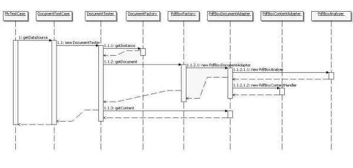
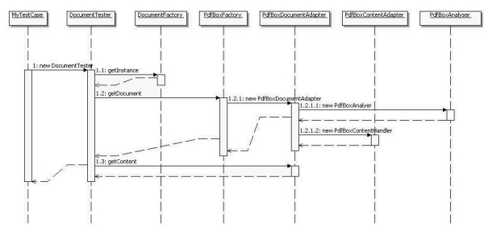

For a better understanding of JPdfUnit there are some architectural diagramms.
back
1. the core framework
2. PDFBox Integration
3. big picture
4. usage scenarios
4.1. MyTest extends PdfTestCase
4.2. MyTest uses the PdfTester
4.3. Working with the DocumentTester
The first one is a core class diagramm. The DocumentTester class is the
central class of the core framework. This class implements the Assertion
interfaces and holds Document and Content. The Document interface provides
the possibilities to get generell information about the document like number
of pages or the author. The Content interface allows to search the document
for specific text. This can be realized via simple text Strings or even via
regular expressions. These two objects are created via the DocumentFactory.
The DocumentTestCase class works with a DocumentTester an provides the user simple
assert methods. The Assertion interfaces are separated in assertions concerning
the Document (MetaDataAssertion) and the Content (ContentAssertion) which
allows the user to search the document for specific text. This can be realized
via simple text Strings or even via regular expressions.
top
picture 1 : the core framework
As pdf library PDFBox is used as an api for pdf document access in this testing framework. For a possible exchange of this
we used an adapter. The core of the adapter represents the PdfBoxAnalyser class. This class extends the PDFTextStripper class
of the PDFBox and works with the PDDocument and the PDDocumentInformation classes of the PDFBox too for a maximum of information
about the pdf document. The gained informations and functionality are provided to the user via two interfaces Document and Content
which are implemented by the PdfBoxDocumentAdapter and the PdfBoxContentAdapter and so thematically seperated.
top
picture 2 : the framework and pdfbox
Finally there is a complete framework overview. Some more classes are added even the Enum and Exceptions which could be
thrown at runtime. The DocumentFactoryException can be thrown at runtime while instanciating a new Factory.
The DocumentDataSource and the PdfDataSource are responsible for the correct sources for working
with the DocumentTestCase class. The TextSearcher its subclasses and the TextSearchType working for the DocumentTester.
They are used in the different assert methods to define the kind of searching the text within the document.
top
picture 3 : framework overview
The easiest way to use jpdfunit is to make your test class extend the
DocumentTestCase class. Now you need to create a test class like OIOTest.
DocumentTestCase extends the JUnit TestCase class and does setUp and tearDown for
you. There is just one method which has to be implemented the getDataSource().
top
picture 4 : extend the testcase

The other possibility to work with the DocumentTester class. This class is the core of the framework and offers the user
the hole functionality. The best practice is to override the standard JUnit setUp() method and creating there a DocumentTester
with your pdf as parameter for the constructor. After this inital step execute the desired operation on your pdf file.
Do not forget to close the document of your DocumentTester in the teardown() method.
top
picture 5 : do not extend the testcase

Here is another idea to generate possible value of JPdfUnit. You can use the DocumentTester indepentent to JUnit.
So you can get all the Informations as to content and the document via the interfaces Document and Content with
your DocumentTester. Of course you can not use the assert methods of the DocumentTester because they need the JUnit
framework. So only use the functionallities which are provided by the Document and Content interfaces.
top
picture 6 : working with the DocumentTester

{kind=link}
{kind=link}
{kind=link}